كل أفكار الربح في ملف واحد: من المشترك، ومن المستخدم المجاني، ومن الشركات. مع طريقة كل فكرة، وصعوباتها، ومن وين نبدأ.
14 فكرة في 4 مجموعات. الأرقام في الملف أمثلة للتوضيح، والأرقام الحقيقية تنتفق عليها مع كل شريك.
| المجموعة | الفكرة | متى |
|---|---|---|
| أ. المستخدم يدفع لنا | 1. التجربة المجانية وحدود المجاني (Pro) | الحين |
| 2. باقات تصوير بدون اشتراك | الحين | |
| 3. برامج تُشترى مرة وحدة | بعدين | |
| 4. هدية Pro | الحين | |
| 5. مكافأة الدعوات | الحين | |
| ب. عمولة من شريك | 6. مطابخ الوجبات الجاهزة | أكبر ربح للمستخدم |
| 7. «اطلب قائمة المشتريات كلها» | نبدأ بخطوة بسيطة | |
| 8. حجز تحليل دم بالبيت | سريع | |
| 9. عمولة الكوتشات | موجود جزئيًا | |
| 10. روابط شراكة وتحديات برعاية | بعد ما نكبر | |
| ج. شركة تدفع عن المستخدم | 11. النوادي | أكبر ربح |
| 12. الشركات (صحة الموظفين) | أكبر ربح | |
| 13. شركات التأمين | بعدين | |
| د. لا ننصح | 14. الإعلانات، الرهان بالفلوس، بيع البيانات | لا |
الاشتراك: 39 ريال بالشهر أو 299 ريال بالسنة.
المجاني يتعود على التطبيق، وبعدين يوصل لحد معين فيشترك.
| الميزة | المجاني (اقتراح) | Pro |
|---|---|---|
| تصوير الأكل بالذكاء الاصطناعي | 3 باليوم | بدون حد |
| الكوتش AI | 5 رسائل باليوم | بدون حد |
| تصوير الجهاز المجهول | مرتين بالأسبوع | بدون حد |
| ملخص الأسبوع | أول صفحة | كامل مع التعديلات |
| تسجيل التمارين والأكل يدوي، الماي، السجل، الودجتس | مجاني | مجاني |
الحدود اقتراح، وتحتاج موافقتك قبل ما نبنيها. نربطها مع RevenueCat للدفع.
للي ما يحب الاشتراكات: يشتري مرة وحدة، مثلًا 30 تصويرة أكل بـ 9 ريال. تنفع لما يخلص حده اليومي.
«تنشيف رمضان 4 أسابيع»، «تجهيز للعرس 12 أسبوع»، «برنامج المبتدئ». يسويها كوتش أو مشهور، ونتقاسم الربح معه.
يشتري اشتراك لصديقه أو أهله. أقوى وقت لها: رمضان والعيد وبداية السنة.
نظام الدعوات موجود. نخلي المكافأة شهر Pro مجاني لكل صديق يشترك. تسويق ببلاش.
إحنا نعرف وش يحتاج المستخدم ياكل ويسوي، والشريك يبيعه له، وإحنا ناخذ نسبة.
الفكرة: مطبخ شريك يطبخ للمستخدم خطته من Adro بالضبط ويوصلها كل يوم.
الميزة اللي ما عند أحد: المستخدم ما يحتاج يصوّر ولا يسجّل. الوجبة مسجلة بسعراتها الصحيحة.
كيف نربح: نسبة من اشتراك المطبخ. الاشتراكات عادة غالية، فحتى نسبة صغيرة تطلع مبلغ زين.
مثال للتوضيح: 10% من اشتراك 2,000 ريال = 200 ريال بالشهر من كل مستخدم. هذا أكثر من 5 أضعاف اشتراك Pro.
نموذجين:
الصعوبات: إحنا ما نطبخ ولا نوصّل. المطبخ مسؤول عن الأكل ورخصه (هيئة الغذاء والدواء والبلدية) والدفع. لازم نتأكد من جودته، لأن أي تجربة سيئة تنحسب على Adro.
البداية: مطبخ واحد في الرياض كتجربة. المطابخ تبي عملاء، فبيكونون متحمسين.
مثال للتوضيح: سلة أسبوعية بـ 400 ريال × 5% = 20 ريال لكل طلب.
الصعوبات:
على مرحلتين:
عندنا صفحة تحاليل الدم. نضيف زر «احجز تحليل بالبيت» مع مختبر مثل البرج أو بيولاب، وناخذ عمولة على كل حجز. بعدها التطبيق يقرأ النتيجة ويعدّل الخطة (مثل: الحديد ناقص، فيزيد أكل غني بالحديد).
ليش قوية: الناس أصلًا يسوون تحاليل، وإحنا نعطيهم سبب يسوونها من Adro.
قسم الكوتشات الحقيقيين موجود. المستخدم اللي ما يشترك Pro ممكن يدفع لكوتش، وناخذ عمولة 15 إلى 20% من كل اشتراك كوتش.
هنا الفلوس الكبيرة: عقد واحد = مئات المستخدمين.
النادي يدفع اشتراك شهري، ويعطي أعضاءه Adro بشعاره، فيه:
ليش النادي يدفع: الأعضاء اللي يتابعون تقدّمهم يستمرون في اشتراك النادي أكثر.
الشركة تدفع عن موظفيها، وتاخذ:
يمشي مع برنامج جودة الحياة في رؤية 2030، والشركات الكبيرة تدوّر على برامج لصحة موظفيها.
شركات التأمين مثل بوبا والتعاونية تكافئ المؤمَّن عليه النشيط. المستخدم يشترك عن طريقهم وهم يدفعون لنا. تحتاج موافقة المستخدم على مشاركة نشاطه، وتحتاج أرقام وثقة قبل ما نروح لهم.
بالترتيب. كل خطوة تعطينا أرقام تساعدنا في اللي بعدها.
| متى | وش نسوي | مين يسويه |
|---|---|---|
| قبل النشر | التجربة المجانية 7 أيام، حدود المجاني، الاشتراك مع RevenueCat، مكافأة الدعوات، هدية Pro | أنا أبنيها، وأنت توافق على الحدود والأسعار |
| أول شهر | زر «اطلب» في قائمة المشتريات (إرسال وقياس)، وصفحة «مطبخ يطبخ خطتك» تجمع المهتمين | أنا أبنيها |
| أول شهرين | شراكة مع مطبخ واحد في الرياض، وباقات التصوير | أنت تتواصل مع المطبخ، وأنا أجهّز العرض والربط |
| 3 إلى 6 شهور | حجز التحاليل مع مختبر، وأول نادي شريك | أنت تتواصل، وأنا أبني صفحات النادي |
| بعد 6 شهور | الشركات، والبرامج المدفوعة مع المشاهير، والتحديات برعاية | نحتاج أرقام مستخدمين قوية |
تجربة Pro لكل مستخدم جديد
شريك واحد في الرياض يكفي كبداية
كل الأرقام والنسب في الملف أمثلة للتوضيح. النسب الحقيقية تنتفق عليها مع كل شريك، والأسعار ممكن تتغير بعد ما نشوف تصرف المستخدمين.